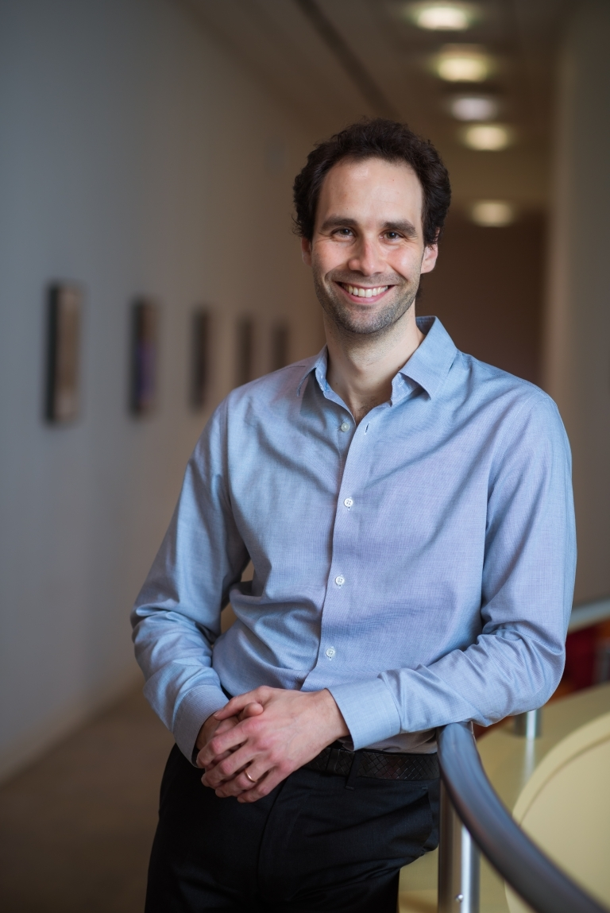
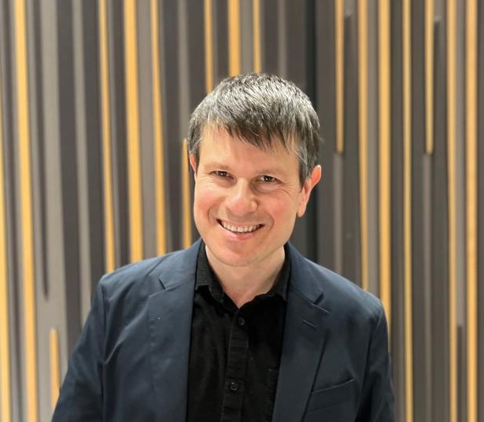
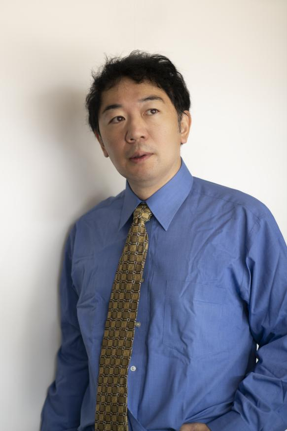
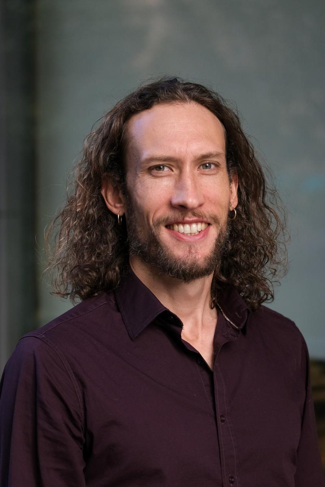
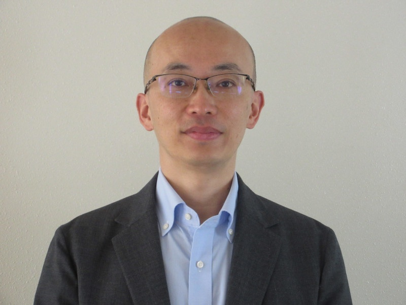
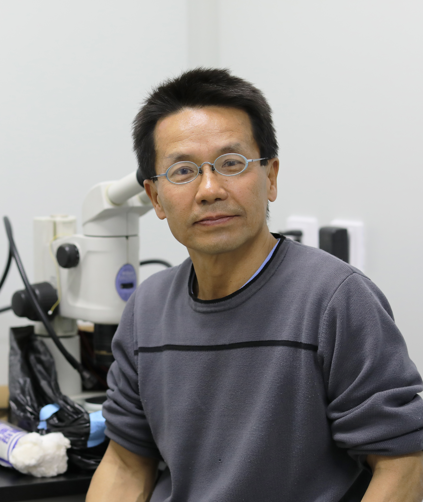

Sleep and Hibernation
- Time
- September 28, 2026
- Location
- 1F Conference Room, National Institute of Biological Sciences, Beijing
Conference Overview
From Sleep Homeostasis to Hibernation-like Hypometabolism
From the daily rhythm of sleep to the extreme survival strategy of hibernation, nature has evolved fascinating states of quiescence. One is familiar and universal; the other is rare and remarkable. Though deeply intertwined, the two remain fundamentally different. Over the past decades, scientists have continuously sought to uncover the mechanisms behind these two physiological states, aiming to elucidate how organisms achieve a reversible and precise switch between activity and rest.
Against this backdrop, we hope to host the Hibernation & Sleep Science Symposium. The conference will focus on the current state of sleep and hibernation research, as well as the emerging frontiers at their intersection. We have invited ten distinguished scholars from the United States, the United Kingdom, Switzerland, Japan, and China, whose research covers various subfields within sleep and hibernation biology. By exploring these two life states across genetic, molecular, and neural circuit levels, and by integrating mechanistic insights with precise manipulation and translational applications, this symposium aims to provide a platform for exchange across disciplines and research directions.
We warmly welcome researchers, clinicians, and students from all related fields to join us. We look forward to your participation in this inspiring dialogue as we work together to advance the frontiers of hibernation and sleep science.
Conference Themes
Molecular Basis of Sleep Homeostasis
Metabolic Adaptation in Dormant States
Brain State Transitions and Functions
Invited Speakers

Keynote Speaker
Siniša Hrvatin
MIT, Department of Biology; Whitehead Institute for Biomedical Research
TopicPreoptic neurons that control entry into hibernation
View profileAnita Lüthi
University of Lausanne, Department of Fundamental Neurosciences
TopicNoradrenergic signaling in NREM sleep and in a vagal stimulation-induced NREM sleep-like state
View profile
Vladyslav Vyazovskiy
University of Oxford, Department of Physiology, Anatomy and Genetics
TopicSleep, wake, torpor and other states: from definition to mechanisms
View profile
Takeshi Sakurai
University of Tsukuba, International Institute for Integrative Sleep Medicine (WPI-IIIS)
TopicNeural Control of Hibernation-like Hypometabolism in Non-hibernating Mammals
View profileHiromasa Funato
Toho University, Department of Anatomy; University of Tsukuba, WPI-IIIS
TopicMany roads to sleep: touch, kinases, and midbrain circuits
View profileWei Li
Shanghai Jiao Tong University School of Medicine, SANS Institute for Neuroscience and Vision Research
TopicSeeing in the cold - hibernation biology and its applications
View profile
Graham Diering
University of North Carolina at Chapel Hill, Department of Cell Biology and Physiology
TopicSynapse homeostasis: a cellular basis for the accumulation and resolution of sleep need
View profile
Yoshifumi Yamaguchi
Hokkaido University, Institute of Low Temperature Science
TopicA genetic clue to the regulation of mammalian hibernation
View profile
Yi Zhong
Tsinghua University, School of Life Sciences; IDG/McGovern Institute for Brain Research; Tsinghua-Peking Center for Life Sciences
TopicMemory Reactivation Underlies Experience-Dependent Adaptive Regulation of Sleep
View profileQinghua Liu
Tsinghua University, Tsinghua Institute of Multidisciplinary Biomedical Research; National Institute of Biological Sciences, Beijing
TopicPhase separation, synaptic transmission, and sleep amount
View profileAttendance Information
There is no registration fee for this symposium. However, please scan the QR code on the right to provide your attendance information. This will help us estimate the number of participants and allow us to contact you with the latest updates about the meeting.